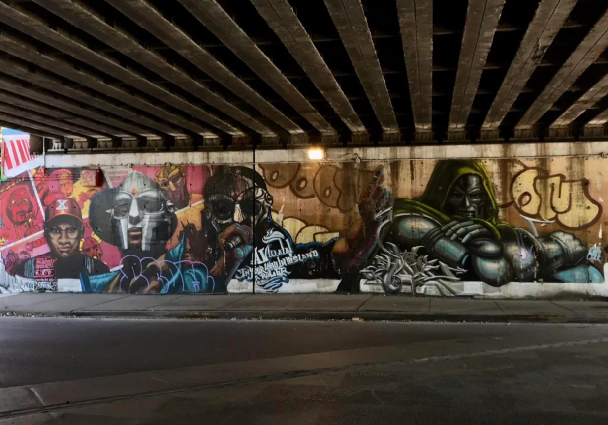
LEGADO
El Impacto deMF DOOM
"Just remember ALL CAPS when you spell the man name"
Descubre su influencia
1999
∞
Un Legado Inmortal
El impacto de MF DOOM en el hip-hop y la cultura popular trasciende su tiempo en la tierra. Su enfoque único de la producción musical, su compleja estructura lírica y su misteriosa persona enmascarada han dejado una huella indeleble en generaciones de artistas y fans.
Desde su fallecimiento en 2020, su legado ha continuado creciendo, con nuevos oyentes descubriendo su música y artistas contemporáneos reconociendo su influencia. DOOM demostró que se podía alcanzar la grandeza artística sin comprometer la integridad creativa, estableciendo un nuevo estándar para los artistas que valoran la autenticidad por encima de la comercialidad.
100+
Artistas Influenciados
20+
Años de Innovación
∞
Impacto Cultural
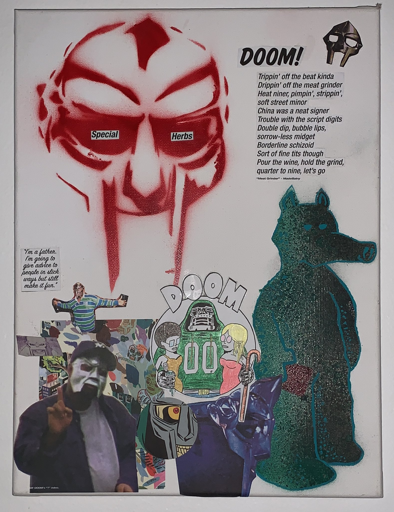
Impacto en el Hip-Hop
Innovación Lírica
DOOM revolucionó el enfoque lírico en el hip-hop con sus complejas estructuras de rimas, su extenso vocabulario y su habilidad para entretejer referencias culturales, literarias y de cómics en sus letras.
Su estilo único, caracterizado por juegos de palabras ingeniosos y narrativas no lineales, ha influido en innumerables artistas que buscan elevar el nivel lírico del género.
"DOOM era el escritor de hip-hop más influyente de los últimos 15 años. Nadie se acercaba a su dominio del lenguaje, su ingenio y su capacidad para contar historias."
Producción Musical
Como productor bajo el alias Metal Fingers, DOOM desarrolló un estilo distintivo caracterizado por samples obscuros de jazz, soul y música de películas antiguas, combinados con ritmos lo-fi y atmósferas únicas.
Su enfoque del sampling, que a menudo incorporaba diálogos de dibujos animados y películas de serie B, creó un universo sonoro reconocible instantáneamente que ha influido en productores de todo el mundo.
"Su producción era como un collage sonoro de la cultura pop, transformando fragmentos olvidados en obras maestras musicales."
Identidad Artística
La máscara metálica de DOOM, inspirada en el Doctor Doom de Marvel, se convirtió en un símbolo icónico que trascendió el hip-hop. Su decisión de separar al artista de la persona, centrándose únicamente en la música, estableció un nuevo paradigma de autenticidad artística.
Su enfoque de la fama y la imagen pública, a menudo subversivo y contrario a las expectativas de la industria, ha inspirado a artistas a forjar sus propios caminos creativos sin comprometer su visión.
"Uso una máscara para que cuando te enfrente cara a cara, no puedas decir si estoy mintiendo."
Artistas Influenciados
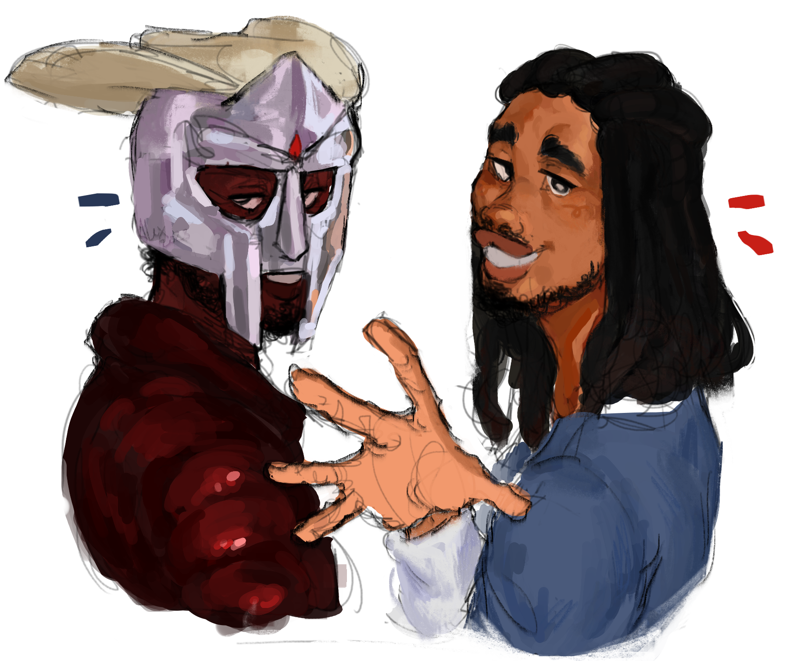
Earl Sweatshirt
El miembro de Odd Future ha citado a DOOM como una de sus mayores influencias, adoptando un enfoque similar a la complejidad lírica y la producción atmosférica.
"DOOM es el mejor rapero de todos los tiempos. No hay nadie que haya hecho lo que él hizo con las palabras."
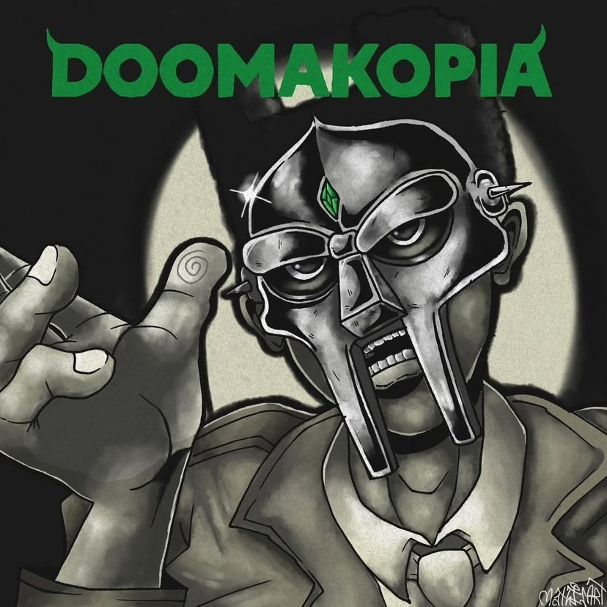
Tyler, The Creator
El fundador de Odd Future ha expresado repetidamente su admiración por DOOM, cuya influencia se puede escuchar en sus primeros trabajos y en su enfoque de la producción musical.
"DOOM me enseñó que podías hacer lo que quisieras en la música, sin seguir reglas."
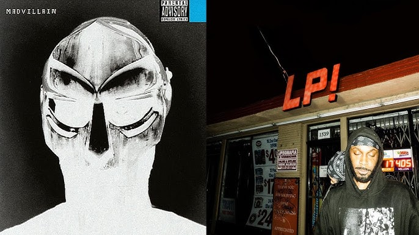
JPEGMAFIA
El productor y rapero experimental ha mencionado a DOOM como una influencia clave en su enfoque no convencional de la producción y su estética musical única.
"DOOM me mostró que podías ser completamente tú mismo y aún así tener éxito en la música."
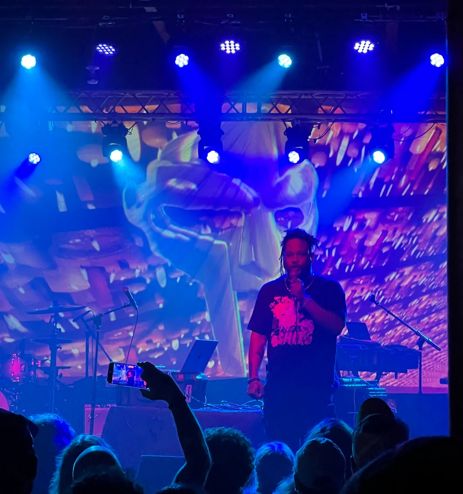
Open Mike Eagle
El rapero de art-rap ha citado a DOOM como una influencia fundamental en su enfoque lírico y su voluntad de experimentar con diferentes estilos y conceptos.
"La forma en que DOOM construía mundos enteros con sus palabras cambió mi perspectiva sobre lo que era posible en el hip-hop."
El Impacto del Villano
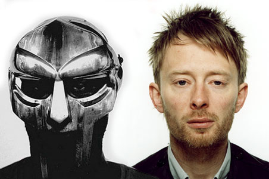
Thom Yorke
Radiohead
Experimental
"MF DOOM era un escritor verdaderamente dotado. Su imaginación no tenía límites. Era un privilegio conocerlo y trabajar con él."
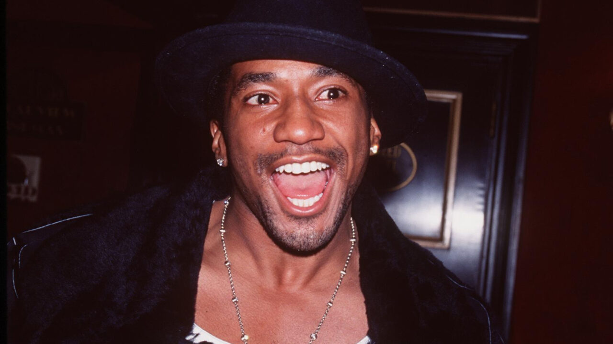
Q-Tip
A Tribe Called Quest
Hip-Hop Clásico
"DOOM fue uno de los mejores MCs y productores de todos los tiempos. Su creatividad no tenía límites. El mundo ha perdido a un genio."
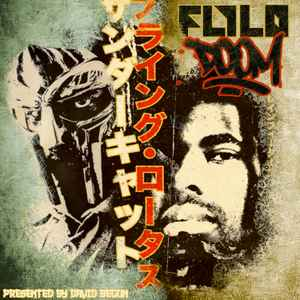
Flying Lotus
Brainfeeder
Electrónica Experimental
"Descansa en paz al gran MF DOOM. Un verdadero inspirador para muchos de nosotros."
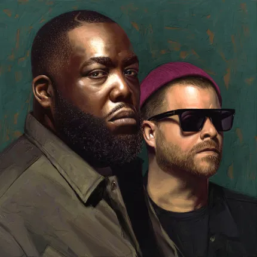
Run The Jewels
El-P & Killer Mike
Hip-Hop Alternativo
"Gracias DOOM... Cambiaste mi vida."
El-P
Company Flow
Hip-Hop Underground
"Uno de los más grandes de todos los tiempos. Tanto como MC como productor. Un gigante."
Tyler, The Creator
Odd Future
Hip-Hop Moderno
"DOOM cambió mi forma de ver las rimas. Su enfoque del hip-hop era completamente único y revolucionario."
Tributos y Homenajes
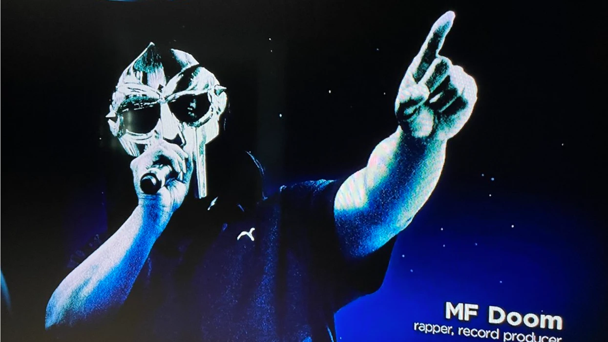
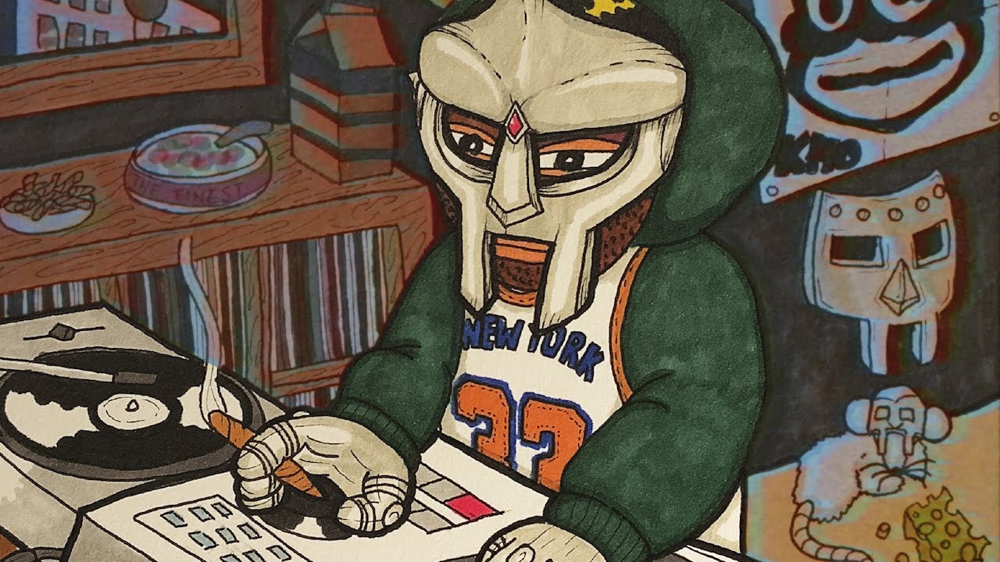
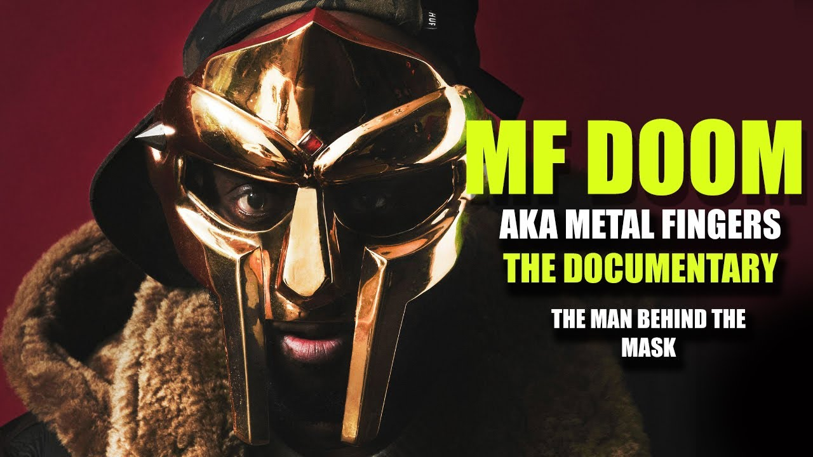
Legado Cultural
Arte y Diseño
La icónica máscara metálica de DOOM ha trascendido la música para convertirse en un símbolo reconocible en el arte urbano, el diseño gráfico y la moda. Artistas de todo el mundo continúan incorporando su imagen en obras que celebran su legado.
Educación Musical
Las técnicas de producción y las estructuras líricas de DOOM son estudiadas en programas educativos de música y producción en todo el mundo, estableciendo un estándar para la innovación en el hip-hop que continúa inspirando a nuevas generaciones.
Literatura y Narrativa
El enfoque narrativo único de DOOM, que creaba personajes y universos complejos a través de su música, ha influido en escritores y narradores más allá del ámbito musical, demostrando el poder del hip-hop como forma de storytelling.
Comunidad y Conexión
La música de DOOM ha creado una comunidad global de fans dedicados que continúan compartiendo, analizando y celebrando su trabajo, manteniendo vivo su legado a través de foros, eventos y proyectos colaborativos.
El Legado Eterno
La influencia de MF DOOM trasciende el tiempo y los géneros, dejando una huella indeleble en la cultura del hip-hop.
Innovación Lírica
8.5K+
Referencias Únicas
"El Shakespeare del Hip-Hop"
- Rimas Multisílabas
- Narrativas Complejas
- Juegos de Palabras
Influencia Global
150+
Artistas Influenciados
"El Villano Favorito del Hip-Hop"
- Estilo Único
- Técnicas Innovadoras
- Impacto Cultural
Mística Legendaria
20+
Años de Misterio
"El Supervillano Misterioso"
- Personajes Alter-Ego
- Máscara Icónica
- Aura Misteriosa
2.5M+
Oyentes Mensuales
500+
Samples Únicos
15+
Álbumes Influyentes
El Villano Inmortal
Aunque Daniel Dumile ya no está físicamente presente, MF DOOM sigue siendo una figura inmortal en la cultura hip-hop. Su influencia continúa expandiéndose, inspirando a nuevas generaciones de artistas y fans que descubren su música cada día.
Su legado perdura en cada sample ingenioso, en cada rima compleja, en cada máscara que simboliza la priorización del arte sobre la fama. DOOM nos enseñó que la verdadera grandeza artística proviene de mantenerse fiel a la visión creativa, sin importar las tendencias o expectativas.
"Remember ALL CAPS when you spell the man name"- MF DOOM